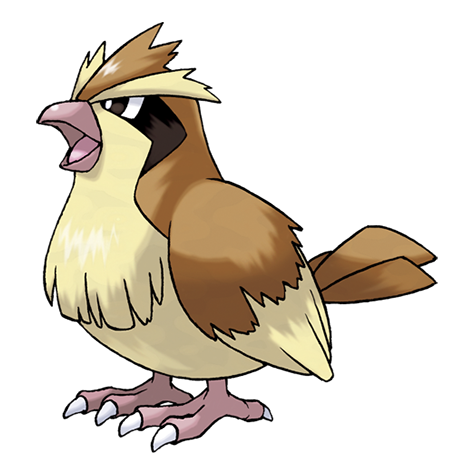

-
Bulbasaur #0001

There is a plant seed on its back right from the day this Pokémon is born. The seed slowly grows larger.
-
Ivysaur #0002

When the bulb on its back grows large, it appears to lose the ability to stand on its hind legs.
-
Venusaur #0003

Its plant blooms when it is absorbing solar energy. It stays on the move to seek sunlight.
-
Charmander #0004


It has a preference for hot things. When it rains, steam is said to spout from the tip of its tail.
-
Charmeleon #0005

It has a barbaric nature. In battle, it whips its fiery tail around and slashes away with sharp claws.
-
Charizard #0006

It spits fire that is hot enough to melt boulders. It may cause forest fires by blowing flames.
-
Squirtle #0007

-
Wartortle #0008


It is recognized as a symbol of longevity. If its shell has algae on it, that Wartortle is very old.
-
Blastoise #0009

It crushes its foe under its heavy body to cause fainting. In a pinch, it will withdraw inside its shell.
-
Caterpie #0010

For protection, it releases a horrible stench from the antenna on its head to drive away enemies.
-
Metapod #0011

It is waiting for the moment to evolve. At this stage, it can only harden, so it remains motionless to avoid attack.
-
Butterfree #0012

In battle, it flaps its wings at great speed to release highly toxic dust into the air.
-
Weedle #0013

Beware of the sharp stinger on its head. It hides in grass and bushes where it eats leaves.
-
Kakuna #0014

Able to move only slightly. When endangered, it may stick out its stinger and poison its enemy.
-
Beedrill #0015

In battle, it flaps its wings at great speed to release highly toxic dust into the air.
-
Pidgey #0016

Very docile. If attacked, it will often kick up sand to protect itself rather than fight back.
-
Pidgeotto #0017

This Pokémon is full of vitality. It constantly flies around its large territory in search of prey.
-
Pidgeot #0018

This Pokémon flies at Mach 2 speed, seeking prey. Its large talons are feared as wicked weapons.
-
Rattata #0019

Will chew on anything with its fangs. If you see one, you can be certain that 40 more live in the area.
-
Raticate #0020

Its hind feet are webbed. They act as flippers, so it can swim in rivers and hunt for prey.
-
Spearrow #0021

Inept at flying high. However, it can fly around very fast to protect its territory.
When it retracts its long neck into its shell, it squirts out water with vigorous force.
-